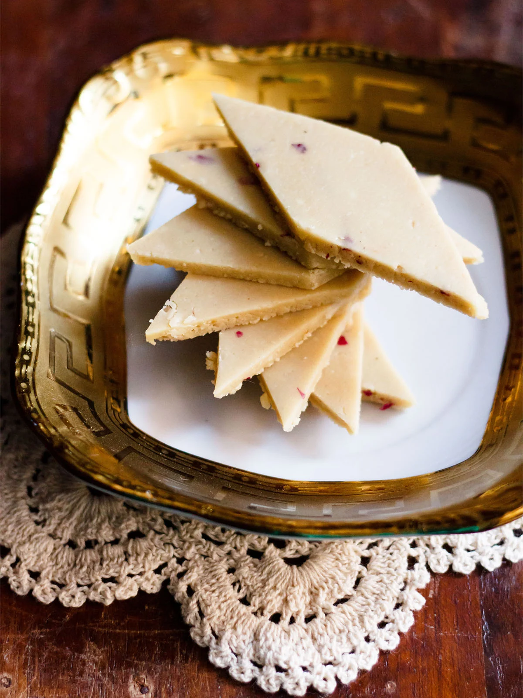

Kaju Katli recipe

Description
Perfect Kaju Katli is a traditional Indian cashew fudge candy that’s terrifically smooth, thin, and melts in your mouth. This lovely treat includes a hint of rose but is completely customizable with your favorite flavors. And while it’s not the easiest recipe to make from scratch, I promise it’s worth every bit of effort! My step-by-step photos, video and instructions will help you make this foolproof kaju katli recipe as a dessert for yourself or a sweet gift for family and friends.
Kaju Katli is a traditional cashew fudge, and is one of the most sought after and loved Indian sweets. Whenever we get a big box at home they disappear in a matter of days.
JIf you stay in North India during Diwali festival you might receive a box of kaju katli or dry fruits as a gift. Kaju katli is one of the most popular sweets which is gifted to relatives and friends during the diwali festival.
Ingredients
- cashews
- sugar
- water
- butter/ghee/coconut oil
- fresh organic rose
Steps
- Place 1 cup cashews (kaju) in a dry grinder or coffee grinder or blender. I usually keep cashews at room temperature. Hence the cashews are dry. Avoid using refrigerated cashews as they will release moisture once ground and turn more into a cashew paste.
- Grind the kaju to a smooth powder, making sure you don’t over do the grinding process as fat should not release from the cashews. I ran the mixer at a stretch first and then scraped the sides and ran again at intervals for a couple of times.The cashews should be in powder form and not become pasty or buttery like cashew butter. If there are tiny pieces in the cashew powder, then just let it be – or you can also sieve the cashew powder and set aside. Use a medium fine sieve and not a fine one to sift the powdered cashews.
- Combine ½ cup sugar and 5 tablespoons water in a thick bottomed pan (or kadai or a non-stick pan).
- Keep on low flame and let the sugar dissolve in the water. There is no consistency in the sugar syrup like one string or two string. Simply let the sugar dissolve in the water and then proceed with the next step.
- When the sugar completely dissolves in the water, add the cashew powder.
- Stir and keep on stirring non-stop on a low flame. If there are lumps then break the lumps as you stir and continue to stir. This consistent stirring is the key for a smooth and even kaju katli dough.
- The mixture will thicken and start coming together to form a very soft dough. Then it is time to remove the whole lump of the mixture from the pan and place it on a work surface. This process of making the kaju katli dough took me exactly 8 minutes on a low flame.Depending on your temperature, pan etc you can use a time span of 7 to 9 minutes after adding the cashew powder. Another way of checking is taking a small piece of the dough and form into a ball. The ball should not stick to your fingers and be smooth. Do not scrape the edges as they are sticky and chewy.
- Put the entire cashew dough on a work surface. Add 1 teaspoon rose petals (or 1 teaspoon rose water or 8 to 9 strands of saffron) and 1 tablespoon ghee or coconut oil. The addition of rose petals and coconut oil or ghee are optional.The dough will be very hot, so let it rest for a minute or two until just hot enough to touch. When the heat is enough to handle begin to knead the dough.
- Knead the dough lightly, flatten it and place it on a greased plate or tray. Don’t overdo kneading as this will release fat from the cashews. The grainy texture in the dough goes away as you knead it. Remember the dough should be hot while kneading.You can also apply some oil or ghee on your palms instead of adding ghee/oil separately. If the dough looks too soft, add a teaspoon of some dried milk powder. If the dough looks dry or dense add a teaspoon of milk to soften it.
- You can also place it on a large piece of parchment or butter paper. The cashew dough should still be quite warm when you start rolling it. As it cools it will harden more and then becomes difficult to roll, so work quickly! Gently roll the kaju barfi dough with a rolling pin to make it even. There will be fine cracks in the dough.
- Roll to get a thickness of about 3 to 5 mm (about 1/8 inch). Then let the rolled cashew dough cool.
- Once cooled completely, cut the cashew dough into squares or diamond shapes. Scrape off the uneven edges and enjoy as a little snack as you work.